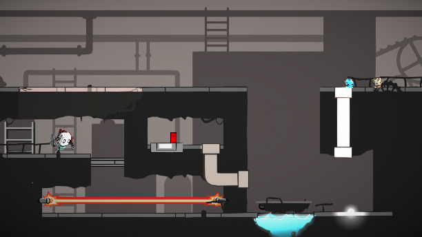

Gabriele Dal Cengio
Full Stack Developer
Resurgence
Advanced Game Design Final Project | Sept 2020 - dec 2020
Context
Resurgence is a mid-core, puzzle platforming game my team and I created for advanced game design course project. It was meant to be a fun, cooperative experience supporting two controllers for each player. Only through working together can the two players defeat the final boss and save the world from pollution.
Process
We began by exploring the different genres and ideas for games that we could make. We decided on the idea of a character being able to travel through electric current or water. This was scrapped after brainstorming and fleshing out the idea further. We agreed on a puzzle game involving two characters, one with abilities based on the element of earth and one of water. We then started experimenting with the main characters, fine tuning their physics and abilities until they felt fluid. The first issue that arose was how to deal with and maintain physics between the player, their abilities and objects. Through weeks of iteration and bug testing we tweaked the gameplay, then built out levels, enemy behaviour, game structure and then the boss battle.

What I've Learned
I am very proud of the outcome. We've created a full, midcore video game from scratch in which two people can cooperate together and have a good time. Through this experience, I've gained further practice in game design, User Experience design, and logical programming management skills. Our team really focused on having this game accessible to a wide audience. For those who don't game as much, we needed to focus and heavily experiment with tutorials and interaction points. As this is the biggest project I've worked on from the start, I needed to heavily organize it constantly. Because of this organization, my programming teammate and I were able to consistently work on production with the least amount of code conflicts.
We also kept weekly updates that one can view here . Or if you would like my individual updates click here.